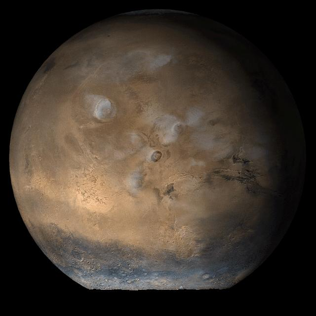
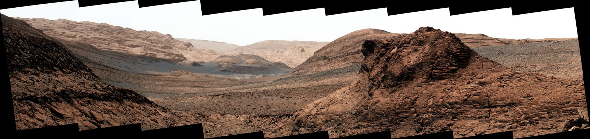
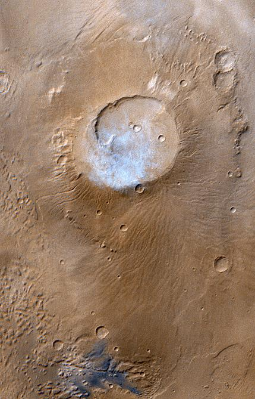
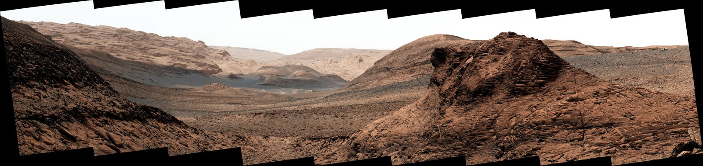
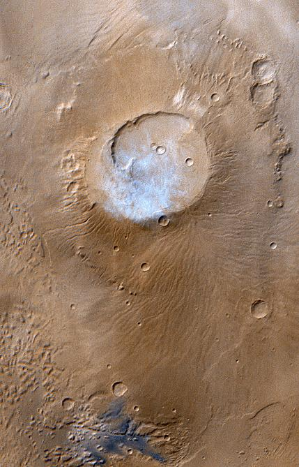
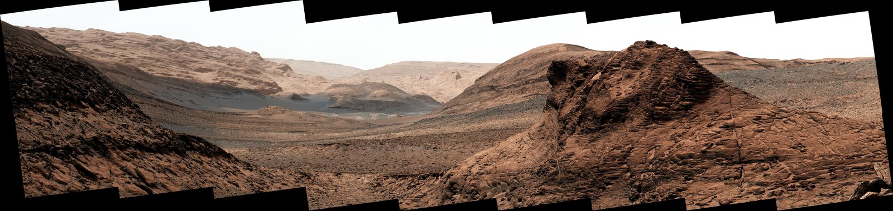
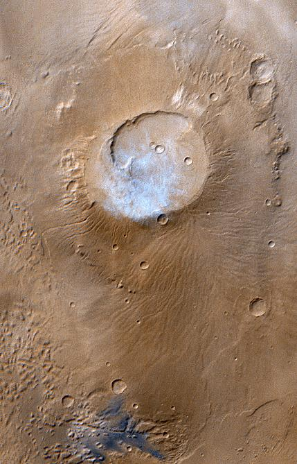

Ogólne informacje
Mars powszechnie nazywany "czerwoną planetą" to sucha planeta wielkością zbliżona do Ziemi o promieniu 3389,5 km. Jedna orbita wokół Słońca zajmuje Marsowi 687 dni a obrót wokół własnej 24.6 Ziemskich godzin. Posiada cieńką atmosferę złożoną głównie z dwutlenku węgla, azotu i argonu.Powierzchnia i budowa
Mars posiada płynne żelazne jądro wytwarzające pole magnetyczne. Powierzchnia Marsa wypełniona jest kraterami. Na Marsie występuje wiele gór, większych nawet od tych na Ziemi.

 




